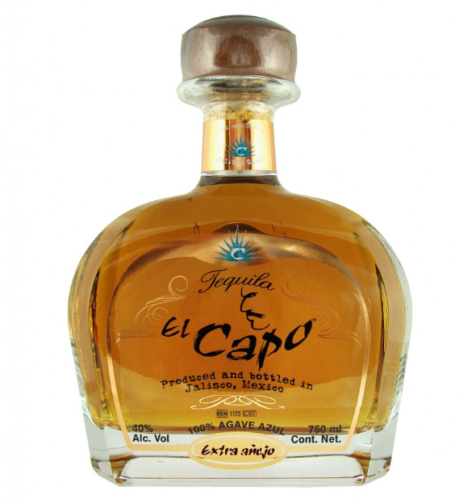

|  |
Tequila El Capo Reposado is 100% Agave from the Highlands of Jalisco. El Capo Reposado rests in American oak for 2 years, and exhibits a beautiful golden color. Scents of cinnamon and berries in the bouquet are joined with white chocolate, soft vanilla, and more berries on the palate. |
 |
Camino Real Gold Tequila 700ml The distillery of Camino Real with its 70-year history of making tequila, is located in the district of Jalisco in the city of Tequila in Mexico. The agaves used in making Camino Real grow in fields at 2,000 metres above sea level, hence the name Camino, i.e. “high” in Spanish. |